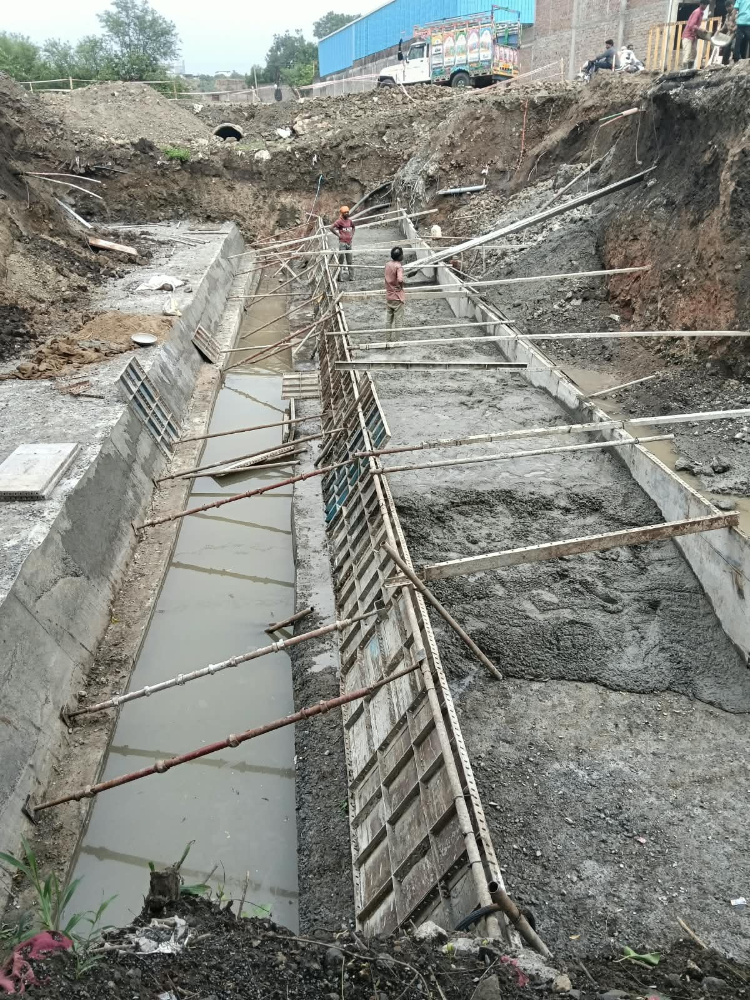
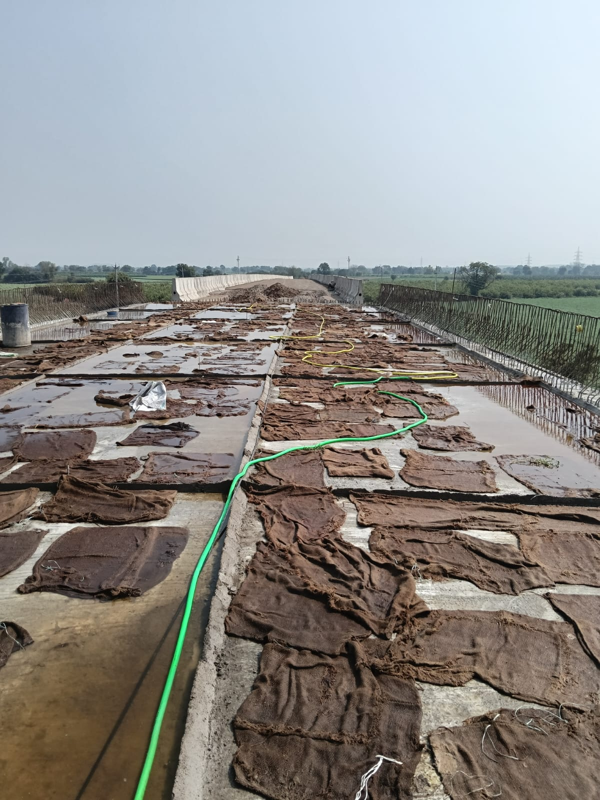
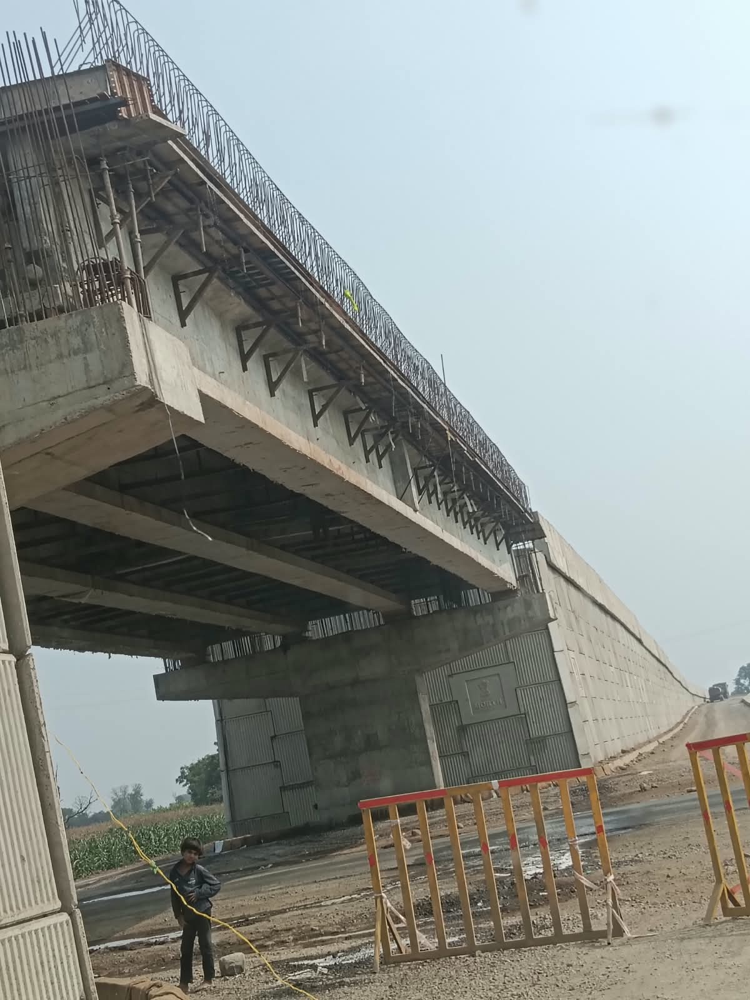
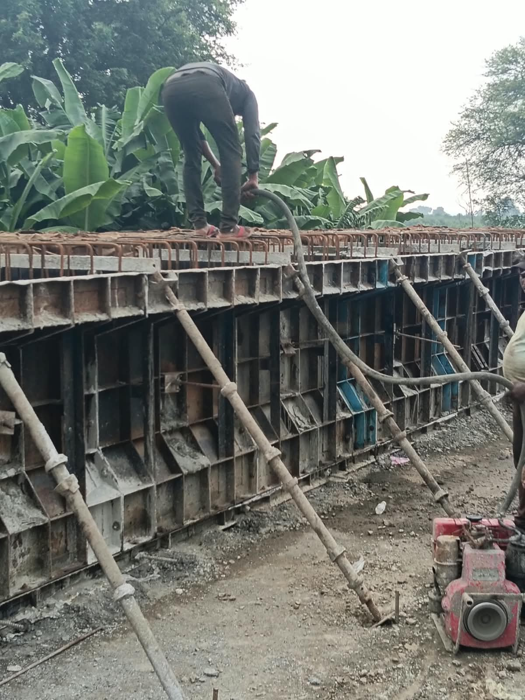
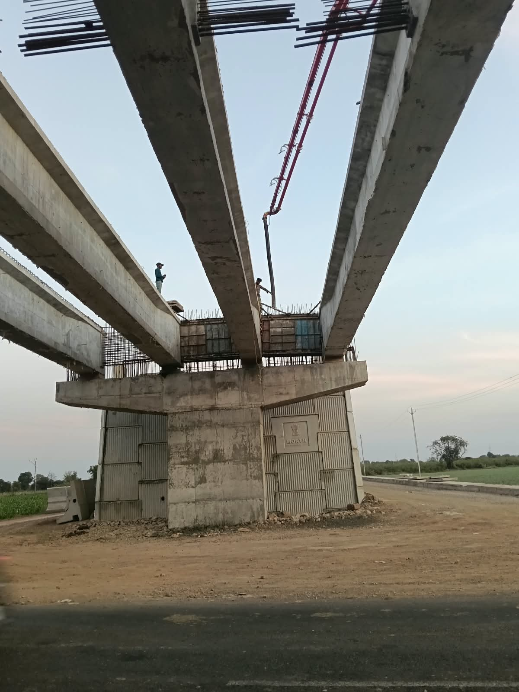
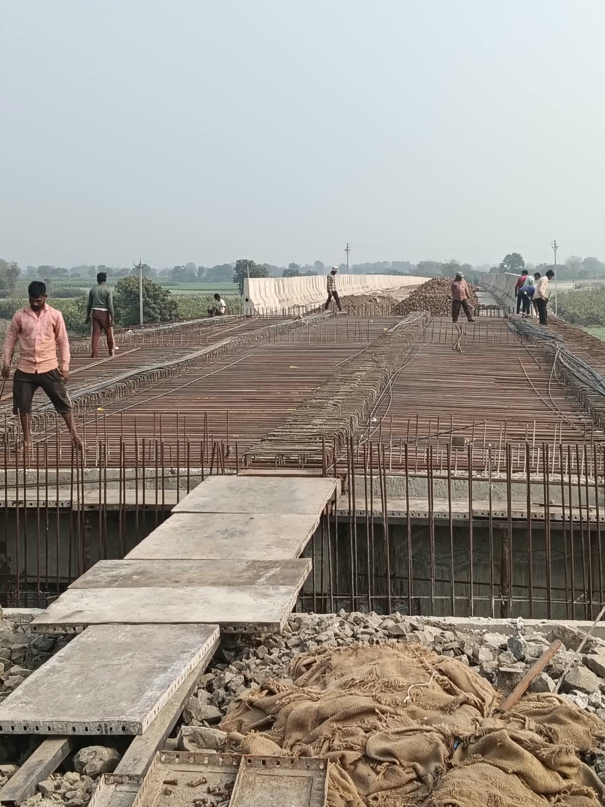
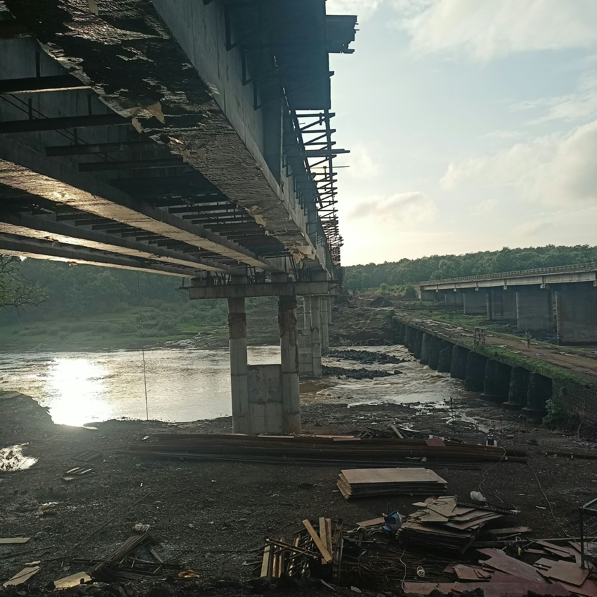

Quality
Every project begins with the belief that quality should never be compromised.
ABOUT R.R ENTERPRISES
15 years of dedicated experience in bridge construction and infrastructure development.
WHO WE ARE
R.R Enterprises is a bridge construction and infrastructure company based in Shajapur, Madhya Pradesh, with 15 years of experience in the field.
The company works on infrastructure projects across India, with a strong presence in North India. Its primary focus is bridge construction, with experience across major bridges, minor bridges and railway overbridges.
R.R Enterprises also undertakes work related to dams and canals. Projects are executed through tenders received directly from government organizations and major private companies.
LEADERSHIP
Owner • R.R Enterprises
With 15 years of experience in bridge construction and infrastructure work, Pradeep Bairagi leads R.R Enterprises with a practical and hands-on approach to project execution.
His experience includes work on major bridges, minor bridges, railway overbridges, dams and canals.
His approach is centered on quality, safety, long-lasting construction and completing work on time.
“Work should be done with quality, safety and honesty — and it should stand the test of time.”
OUR APPROACH
R.R Enterprises takes responsibility for executing projects from the beginning of construction through completion.
Projects are undertaken through tenders received from government organizations and major private companies.
The project is organized with attention to the required work, resources and execution.
Construction is carried out with practical expertise and a focus on quality and safety.
The work continues through to project completion with emphasis on timely delivery.
REAL WORK • REAL SITES
A glimpse of bridge and infrastructure construction work carried out on site.







More project photographs and detailed project information will be added to the Projects section.
WHAT WE STAND FOR
Every project begins with the belief that quality should never be compromised.
Safe working practices are an essential part of responsible construction.
Infrastructure should be built to remain strong and useful for the long term.
Professional execution means respecting project schedules and commitments.
Honest work and professional responsibility are at the heart of R.R Enterprises.
R.R ENTERPRISES